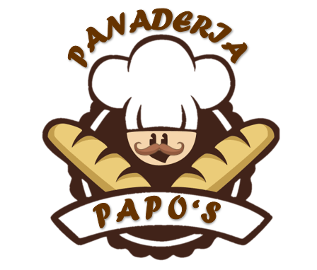

<!DOCTYPE html>
<html>
<head>
  <title>BIENVENIDOS A LA PANADERIA</title>
</head>
<body style="background: url('fondo.jpg'); text-align: center; color: white;"></body>
</html>
<div>
<a href="index.html">
<ALIGN=LEFT><B></B><BR><BR>
<button style="float: left;margin-left: 45px;">Inicio</button>  
    </a>
  </div>
<ALIGN=LEFT><B></B><BR><BR>
<FONT FACE="impact" SIZE=8 COLOR="WHITE">
 PANADERIA PAPO'S</FONT>

<h2>SOBRE NOSOTROS</h2>
<div style="display: inline-block; margin: 10px;">
<br>
     <a href="Inicio.html">
</a>
  </div>
<p>
<center><br>
Nuestro sueño inició un 30 de Marzo de 2014, en una pequeña casa ubicado en la 
Zona de Cuidad Delgado. Allí vendíamos pan francés y pan dulce, hecho con dedicación y esfuerzo.
<br>
Ahora, además de pan francés y pansitos dulces, hacemos pasteles, galletas y reposterías únicas, 
en sus diferentes variedades, para complacer los gustos exigentes de nuestros queridos clientes.
<br>
Es así, que nace una empresa familiar inspirada por el papa de la hija(Dueña), y con el tiempo fuimos creciendo 
y hoy en dia damos empleo a más de 200 personas.
<br>
Tenemos 4 tiendas en El Salvador.
<br>
En casi 5 años hemos conseguido posicionarnos en el mercado nacional e internacional alcanzando metas, y muchas mas 
que nos hemos propuesto a conseguir.
<br>
Continuaremos trabajando con el mismo amor y pasión para ofrecer todos los días pan recién salido del horno, fresco y 
con la calidad insuperable Papo's.
</br>
<ALIGN=LEFT><B></B><BR><BR>
<HR WIDTH=20% SIZE=4% COLOR="white"> 
  <CENTER>
<h2>EN HONOR A:</h2>
<HR WIDTH=20% SIZE=4% COLOR="white"> 
  <CENTER>
<BR>
JUAN JOSE MEJICANOS
<BR>
(PAPO)
<BR>
<div style="display: inline-block; margin: 20px;">
  <br>

</br>


</p>
